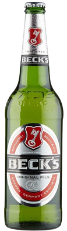
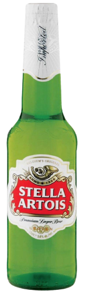
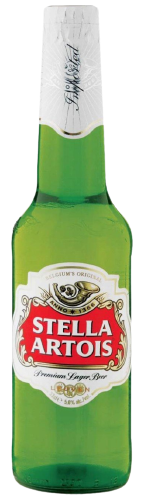

Pale Lager
The most common lager beers in worldwide production are pale lagers. The flavor of these lighter lagers is usually mild, and the producers often recommend that the beers be served refrigerated. Pale lager is a very pale to golden-colored lager with a well attenuated body and noble hop bitterness.
| Type | Notable Ingredients | Origin | Notable Brands / Beers | Taste / Aroma / Characteristics | Alcohol Cotent |
|---|---|---|---|---|---|
| American Lager | Rice, Corn | United States | Budweiser | Neutral flavor | Moderate |
| Dortmnuder Export | - | Germany |  DAB |
Crisp, Well-rounded | Moderate |
| Dry Beer | - | United States |  Asahi |
Lower in Carbohydrates | Moderate |
| Helles Beer | - | Germany | Bavaria Breweries | Mildly Sweet, Low Bitterness | Moderate |
| Märzenbier (Oktoberfestbier) |
More Hops | Germany | Bavaria Breweries | Moderate | |
| Pilsner | - | Pilsen/td> | 
  Pilsner Urquell, Grolsch, Beck's, Heineken, Stella Artois
Pilsner Urquell, Grolsch, Beck's, Heineken, Stella Artois |
Hoppy, Bitter | Moderate |